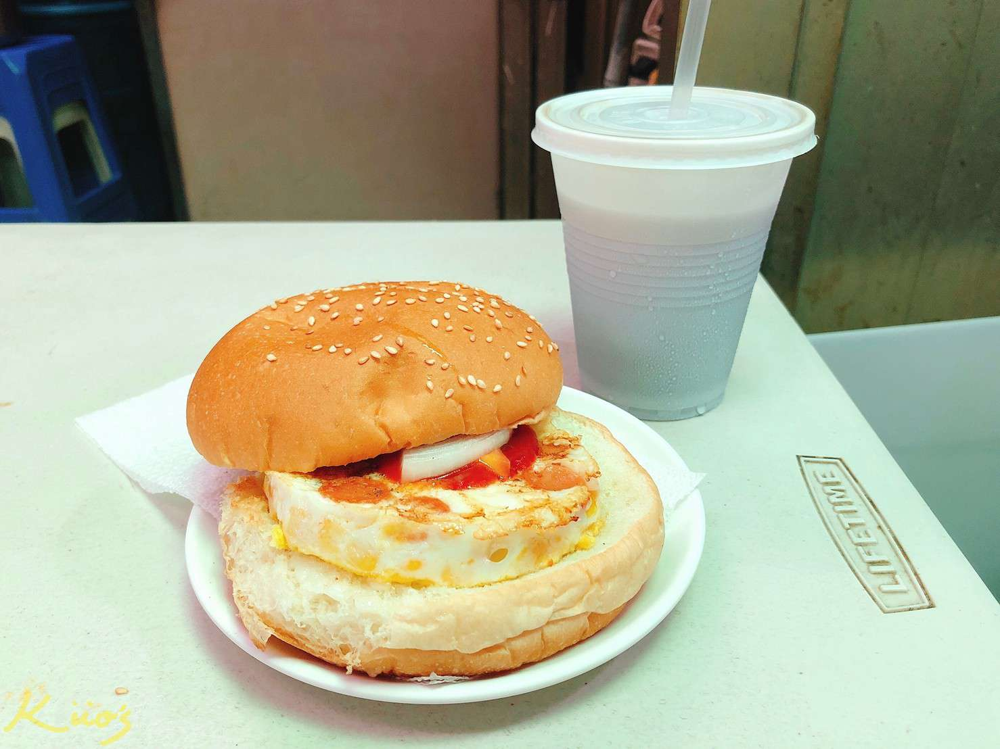

喵姨蛋餅/推薦指數:★★★★

餐點大約40元起跳，有法式吐司、手工蛋餅、甜蛋餅、飲料 喵姨的蛋餅不是古早味麵糊蛋餅 是自家特製的餅皮，我個人覺得挺好吃的 完全不需要沾醬，餡料裡面都有調味，直接吃就很搭了～
姊妹老五冷飲早餐店/推薦指數:★★★ 
而店內最為人津津樂道的就是這個招牌的烘蛋堡了，可以 說是十個人來有八九個都會點。首先在傳統早餐店看到烘 蛋這東西本身就相當引人注意了，更何況吃過的人幾乎都說喜歡，這樣無論如何是都該來一份試試看了。
餐點大約40元起跳，有法式吐司、手工蛋餅、甜蛋餅、飲料 喵姨的蛋餅不是古早味麵糊蛋餅 是自家特製的餅皮，我個人覺得挺好吃的 完全不需要沾醬，餡料裡面都有調味，直接吃就很搭了～
而店內最為人津津樂道的就是這個招牌的烘蛋堡了，可以 說是十個人來有八九個都會點。首先在傳統早餐店看到烘 蛋這東西本身就相當引人注意了，更何況吃過的人幾乎都說喜歡，這樣無論如何是都該來一份試試看了。